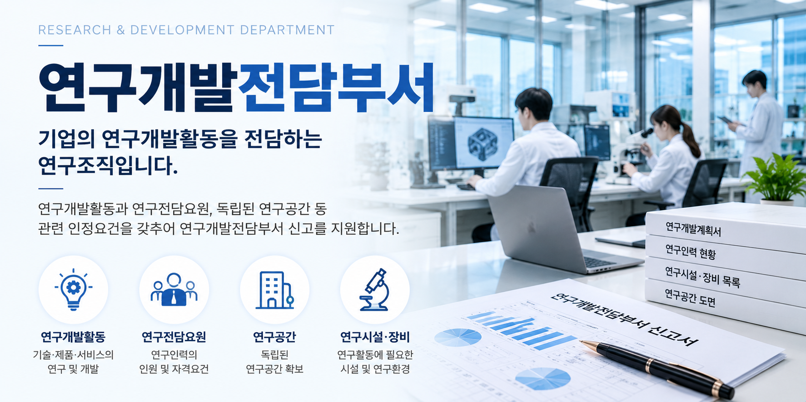
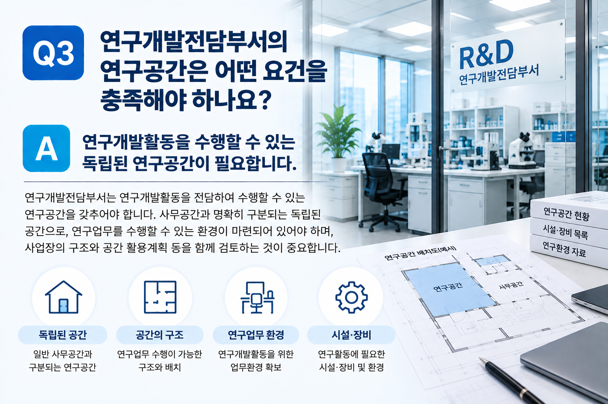

기업에서 연구개발업무를 수행하고 있다는 사실만으로 연구개발전담부서로 인정되는 것은 아닙니다. 실제 연구개발활동의 내용과 연구전담요원, 연구공간 등 관련 인정요건 을 확인하고 현재 기업의 상황에 맞게 신고를 준비하는 것이 중요합니다.
01. 연구개발전담부서란?
연구개발전담부서는 기업 내부에서 연구개발활동을 전담하여 수행하기 위해 설치하는 연구조직입니다.
단순히 연구업무를 담당하는 직원이 있다는 것만으로 인정되는 것은 아니며, 연구개발활동과 연구전담요원, 연구공간 등 관련 요건을 함께 확인해야 합니다.
기업의 유형과 규모, 연구개발활동의 내용 등에 따라 실제 확인해야 할 사항이 달라질 수 있으므로 현재 기업의 연구환경을 기준으로 검토하는 것이 중요합니다.
02. 실제 연구개발활동이 있어야 합니다
연구개발전담부서를 신고하려면 기업에서 실제로 수행하거나 계획하고 있는 연구개발활동의 내용이 구체적으로 확인되어야 합니다.
단순한 일반 업무나 반복적인 생산·영업업무보다는 기업이 어떤 기술이나 제품·서비스 등을 연구·개발하거나 개선하려는지를 확인하는 것이 중요합니다.
| 확인사항 | 검토내용 |
|---|---|
| 연구분야 | 기업에서 실제로 연구·개발하려는 기술 또는 분야 |
| 연구내용 | 제품·기술·공정·서비스 등의 개발 또는 개선 내용 |
| 연구조직 | 연구개발업무를 수행하는 조직과 담당인력 현황 |
03. 연구전담요원 요건을 확인합니다
연구개발전담부서에는 연구개발활동을 전담하여 수행하는 연구전담요원이 필요합니다.
연구업무를 담당하는 직원이 있다고 해서 모두 연구전담요원으로 인정되는 것은 아니므로 현재 연구인력의 인원과 학력·경력 등 관련 인정요건을 확인해야 합니다.
특히 기업의 유형과 규모 등에 따라 확인해야 할 연구인력 요건이 달라질 수 있으므로 신고 전에 현재 연구인력이 해당 기준에 맞는지 검토하는 것이 좋습니다.
04. 연구개발을 위한 연구공간을 확인합니다
연구개발전담부서는 연구개발활동을 수행할 수 있는 연구공간을 갖추어야 합니다.
일반적인 사무공간과의 관계, 사업장의 구조와 배치, 실제 연구업무를 수행할 수 있는 환경인지 등을 함께 확인하는 것이 중요합니다.
기존 사업장의 일부를 연구공간으로 활용하려는 경우에도 해당 공간의 구조와 사용계획이 연구공간 인정요건에 적합한지 사전에 검토하는 것이 좋습니다.
05. 연구시설·장비와 연구환경을 확인합니다
필요한 시설이나 장비는 기업에서 수행하려는 연구개발활동의 내용에 따라 달라질 수 있습니다.
따라서 단순히 장비의 수량을 확인하기보다는 실제 연구개발활동을 수행할 수 있는 연구환경이 마련되어 있는지를 검토하는 것이 중요합니다.
- 연구개발활동을 수행할 연구공간
- 연구개발에 필요한 시설 및 장비
- 연구전담요원이 실제 연구업무를 수행할 수 있는 환경
- 기업에서 수행하려는 연구개발활동과 연구환경의 적정성
06. 신고에 필요한 자료를 준비합니다
연구개발전담부서 신고를 위해서는 기업의 기본현황과 연구조직, 연구전담요원 및 연구공간 등을 확인할 수 있는 관련 자료를 준비해야 합니다.
- 기업의 기본현황 확인자료
- 연구개발활동 및 연구조직 관련 자료
- 연구전담요원의 자격과 재직현황 확인자료
- 연구공간의 위치와 구조를 확인할 수 있는 자료
- 연구시설·장비 등 연구환경 확인자료
실제 필요한 자료는 기업의 상황과 연구개발활동의 내용에 따라 달라질 수 있으므로 신고 전에 준비자료를 확인하는 것이 좋습니다.

07. 연구개발전담부서 신고는 이런 흐름으로 진행됩니다
처음부터 서류를 작성하기보다는 연구개발활동과 연구인력, 연구공간 등 기본적인 인정요건을 먼저 확인한 뒤 신고자료를 준비하는 것이 효율적입니다.
08. 인정 후에도 요건을 계속 관리해야 합니다
연구개발전담부서는 인정받는 것으로 모든 절차가 끝나는 것은 아닙니다.
연구전담요원이나 연구공간 등 신고 당시의 주요 사항에 변동이 발생한 경우에는 필요한 절차가 있는지 확인하고, 인정요건도 계속 유지하는 것이 중요합니다.
특히 연구인력의 변경이나 사업장 이전, 연구공간 변경 등이 있는 경우에는 기존 신고내용과 달라지는 사항을 확인해 보는 것이 좋습니다.
우리 회사도 연구개발전담부서를 설치할 수 있을까요?
간단한 자가진단을 이용하거나 현재 기업의 연구개발활동과 연구인력·연구공간을 기준으로 상담을 신청해 보세요.
※ 연구개발전담부서의 세부 인정요건과 준비자료는 기업의 유형, 규모, 연구개발활동 및 연구환경 등에 따라 달라질 수 있으므로 실제 신고 시에는 해당 기업의 현황을 기준으로 확인하시기 바랍니다.